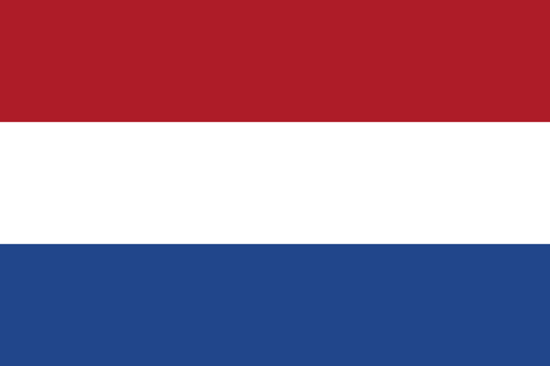
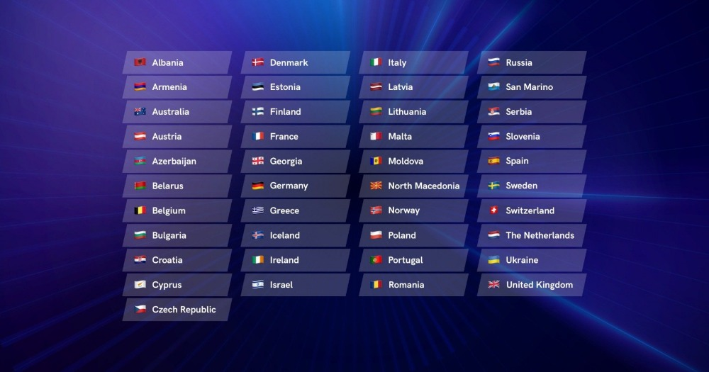

Eurovision 2021 - Rotterdam, Netherlands 
Конкурсът за песен на Евровизия 2021 ще бъде 65-то издание на конкурса за песен на Евровизия.
Състезанието ще се проведе в Ротердам, Холандия,
след победата на страната на състезанието през 2019
г.
с песента "Arcade" на Дънкан Лорънс.
Eurovision Song Contest 2021
Холандия
трябваше да бъде домакин на състезанието 2020
г.,
преди то
да бъде отменено поради пандемията COVID-19.
Това ще бъде петият път, когато Холандия е домакин
на
състезанието, като преди това го е
направил през 1958, 1970, 1976 и 1980
Трябва да учавстват 41 държави както следва:

Как работи?
Всеки участващ телевизионен оператор, който представлява страната си,
избира своя изпълнител
(максимум 6 души) и песен (максимум 3 минути, която не е пускана преди)
чрез национална телевизионна селекция или чрез вътрешна селекция.
Те трябва да го направят преди средата на март, официалният краен срок за изпращане на записи.
Победителят в Евровизия ще бъде избран чрез 2 полуфинала и голям финал.
Традиционно 6 държави автоматично са предварително квалифицирани за големия финал.
Така наречените „Големите 5“ - Франция, Германия, Италия, Испания и Обединеното кралство - и страната
домакин.
Останалите държави ще вземат участие в един от двата полуфинала.
От всеки полуфинал най-добрите 10 ще продължат към големия финал
Това води до общия брой на участниците в Големия финал до 26.
Всяка песен трябва да се пее на живо, докато не се допускат живи инструменти.
След като бъдат изпълнени всички песни, всяка държава ще даде два комплекта от 1 до 8, 10 и 12
точки;
един комплект, даден от жури от петима професионалисти в музикалната индустрия, и един комплект, даден
от зрителите у дома.
Зрителите могат да гласуват по телефон, SMS и чрез официалното приложение.
!!! От справедливост не можете да гласувате за собствената си държава !!!
В големия финал журито и зрителите от всички участващи държави могат да гласуват отново, след като 26-те
финалисти са се представили.
След като времето за гласуване се затвори, водещите ще се обадят на говорители от всички участващи
страни
и ще ги помолят да разкрият своите точки на журито на живо в ефир.
След това точките на зрителите от всички участващи страни ще бъдат събрани и
разкрити от най-ниското
до най-високото,
което в крайна сметка ще разкрие победителя в 65-тата Евровизия.
Победителят ще се представи за пореден път и ще вземе у дома емблематичния трофей от стъклен
микрофон.
Страната-победител традиционно ще получи честта да бъде домакин на следващия конкурс за песен на
Евровизия.